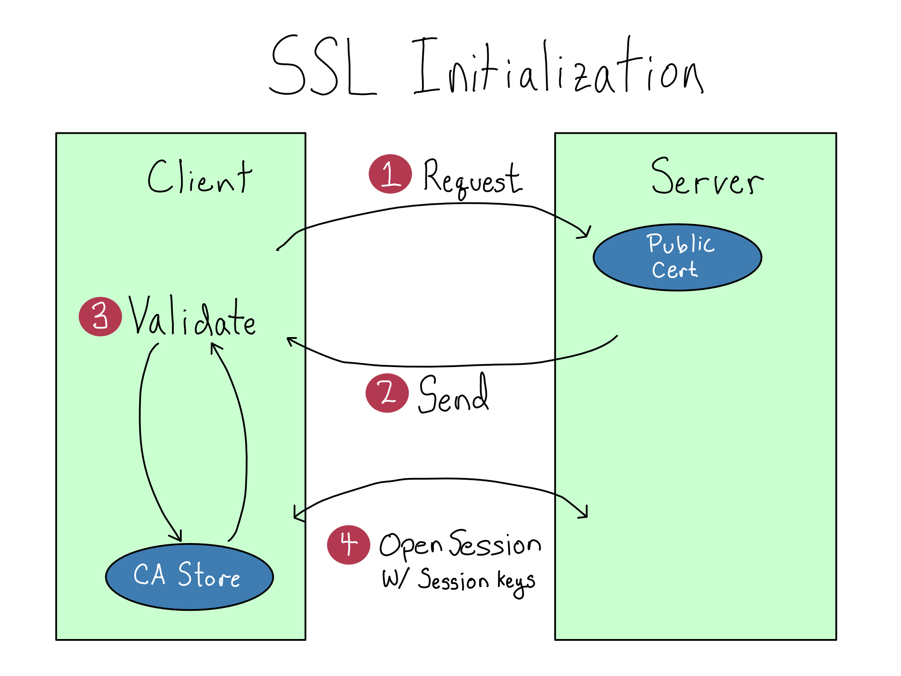

14 You should use SSL/HTTPS
In Chapter 12, I used the analogy of putting a letter in the mail for sending HTTP traffic over the web. But that’s actually not right. HTTP traffic sent in plaintext, which means it’s actually like sending a postcard. Anyone along the way can just look right at what you’re sending. That’s bad.
HTTPS is the digital equivalent of putting your HTTP mail inside an opaque envelope. It doesn’t change anything about the application layer protocol, but it does secure the whole thing.
In this chapter, you’ll learn the basics of how HTTPS works. In the lab, you’ll configure your site to use HTTPS so that it can be accessed securely.
14.1 What HTTPS does
HTTPS is the same as HTTP, but secured with a technology called SSL/TLS (secure sockets layer/transport layer security). SSL/TLS works by configuring the resource to provide an SSL certificate upon demand, which is used to verify the site’s identity and establish an encrypted session.
TLS is actually what’s in use these, but you’ll mostly talk about SSL. TLS is the successor to SSL, but the configuration is identical, so most people didn’t update how they talk about it.
You use HTTPS constantly. Go to a website in your browser and look for a little lock icon near the search bar. That little lock indicates that the domain is secured using HTTPS. If you click on it, you can get more information about the site’s SSL certificate.
If you’re of a certain age, you may recall warnings that you shouldn’t use the WiFi at your neighborhood Starbucks. The issue was twofold.
HTTP has no way to verify that the website you think you’re interacting with is actually that website. So a bad actor could put up a fake WiFi network that makes \(\text{bankofamerica.com}\) resolve to a lookalike website to capture your banking information. That’s called a man-in-the-middle attack.
And even if they didn’t do that, they could inspect the traffic going back and forth and just read whatever you’re sending over the web in what’s called a packet sniffing attack.
In 2015, Google Chrome began the process of marking any site using plain HTTP as insecure, which led to nearly complete adoption of HTTPS across the internet. The risk of both of these kinds of attacks has been neutered and it’s actually pretty safe to use any random WiFi network you want these days – because of HTTPS.
As a website administrator, securing your website or server with HTTPS is one of the most basic things you can do to make sure your website traffic is safe. You should always configure HTTPS for a public website – full stop.
It’s worth noting that this SSL/TLS security can be applied to a number of different application layer protocols, including (S)FTP and LDAP(S). You may run across these depending on your organization. In any case, the SSL/TLS part works the same and all that changes is what’s inside the secure digital envelope.
14.2 How SSL/TLS works
SSL/TLS uses public key encryption (remember, we learned about that in Chapter 8) to do two things – validate that the site you’re visiting is the site you intend and encrypt the traffic back and forth to the site.
To set up SSL for a website, you create or acquire an SSL certificate, which has a public and a private component (sound familiar?).1 Then, verify the public certificate with a trusted Certificate Authority (CA) and put the private certificate in the right place on the website.2
Then, when you go to access that resource, the first thing your machine asks for is a signature. The site uses its private key to generate the signature and your machine verifies the signature against it’s internal trusted CA store.
Now your machine knows it’s communicating with the right host on the other side and you’re not falling victim to a man-in-the-middle attack.
Once the verification process is done, your machine and the remote on the other side create temporary session keys to establish encryption with the website on the other end.3 Only then does it start sending real data, now encrypted securely inside a digital envelope.

14.3 Getting and using SSL certificates
When you buy a computer, it comes configured out of the box to trust a small number of official CAs. So if you’re a website wanting to get a certificate, you generally want to get it from one of those CAs.
This used to be kinda a pain. The CAs charged to issue certificates. While it was only $10 per year to for a basic SSL certificate, they typically would only cover a single subdomain. A wildcard certificate to cover all the subdomains of a root domain was expensive enough to discourage hobbyists.
If you wanted a free certificate, your only option was to use a self-signed certificate, which you’d create similarly to creating an SSH key. This was a pain because you had to manually add the public certificate to the CA store of every machine that would be accessing the site, and then re-add it when the certificate expired.4
Luckily there’s now another option. For most small organizations, I recommend getting a free SSL certificate from the nonprofit CA Let’s Encrypt. They even have some nice tooling that makes it super easy to create and configure your certificate right on your server.
For most organizations, using a public CA to get SSL on public-facing resources is sufficient and use plain HTTP inside private networks. Some large organizations want to encrypt their private traffic as well and run their own private CA. If this is the case, your organization’s policies will make it clear. This can be a pain, because you’ve got to make sure every host inside the network trusts the private CA.
Once you’ve configured SSL/TLS, you generally want to only allow HTTPS traffic to your site. You’ll accomplish this by redirecting all HTTP traffic on port \(80\) to come in via HTTPS on port \(443\).
Some web applications support configuring a certificate directly, while others only accept HTTP traffic, so you’d need to do SSL termination with a proxy in front of the application.
14.4 Comprehension Questions
- What are the two risks of using plain HTTP and how does HTTPS mitigate them?
- Write down a mental map of how SSL secures your web traffic. Include the following: public certificate, private certificate, certificate authority, encrypted traffic, port 80, port 443
14.5 Lab: Configure SSL
We’re going to use Let’s Encrypt’s certbot utility to automatically generate an SSL certificate, share it with the CA, install it on the server, and even update your NGINX configuration.
If you’ve never had to manually configure SSL in the past, let me tell you, this is magical!
14.5.1 Step 1: Follow instructions to add SSL for NGINX
Using Let’s Encrypt to add an SSL certificate to NGINX configuration is a super common task. As of this writing, there’s a great blog post entitled Using Free Let’s Encrypt SSL/TLS Certificates with NGINX. I’d encourage you to look for that article (or something similar) and follow the steps there.
At a high level, what you’ll do is
- Configure the NGINX configuration to know what domain its on.
- Install certbot on the system.
- Run certbot to get the certificate, apply it to the server, and update the NGINX configuration.
Before you move along, I’d recommend you take a moment and inspect the /etc/nginx/nginx.conf file to look at what certbot added.
Relative to the old version, you’ll notice two things. First, the line that read listen 80 is gone from the server block because we’re no longer listening for HTTP traffic. In it’s place, there’s now a listen 443 along with a bunch of stuff that tells NGINX where to find the certificate on the server.
Scrolling down a little, there’s a new server block that is listening on \(80\). This block returns a 301 status code (permanent redirect) and sends traffic to HTTPS on \(443\).
14.5.2 Step 2: Let RStudio Server know it’s on HTTPS
Before we exit and test it out, let’s do one more thing. As mentioned when we configured NGINX the first time, RStudio Server does a bunch of proxying traffic back to itself, so it needs to know that it’s on HTTPS.
You can let RStudio Server know that it’s on HTTPS by adding a header to all traffic letting RStudio Server know the protocol is HTTPS. You can add this line to your nginx.conf:
/etc/nginx/nginx.conf
proxy_set_header X-Forwarded-Proto https;Ok, now try to visit RStudio Server at your URL, and you’ll find that…it’s broken again.
Before you read along, think for just a moment. Why is it broken?
14.5.3 Step 3: Configure security groups
If your thoughts went to something involving ports and AWS security groups, you’re right!
By default, our server was open to SSH traffic on port \(22\). Since then, we may have opened or closed port \(80\), \(8000\), \(8080\), \(8787\), and/or \(3838\).
But now that we’re exclusively sending HTTPS traffic into the proxy on \(443\) and letting the proxy redirect things elsewhere. So you have to go into the security group settings and change it so there are only 2 rules – one that allows SSH traffic on \(22\) and one that allows HTTPS traffic on \(443\).
It’s up to you whether you want to leave port \(80\) open. If you do, it will redirect people to HTTPS on \(443\). If you close it entirely, people who come to port \(80\) will be blocked and will eventually get a timeout. If people are used to coming to the server via HTTP, it might be nice to leave \(80\) open so they get a nice redirect experience instead of getting confusingly blocked.
14.5.4 Step 4: We did it!
This is the end of the labs in this book.
At this point your server is fully configured. You have three real data science services available on a domain of your choosing protected by HTTPS and you can SSH in to do admin work.
Take a moment to celebrate. It’s very cool to be able to stand up and administer your own data science workbench. If you’re working at a small organization or are a hobbyist, you can really use this server to do real data science work.
But this server isn’t enterprise-ready. If you work at a large organization or one with stringent security or privacy rules, your IT/Admin group is going to have concerns. Read on to learn more about what they are and why they’re completely valid.
Like with SSL, this makes more sense if you think key where you see private and lock where you see public.↩︎
The CA verifies the certificate by signing it. Your machine just keeps public certificates for the CAs. Then, when it gets an SSL certificate that’s signed by one of those CAs, it can validate that the CA actually stamped this certificate as valid.↩︎
Unlike the asymmetric encryption used by SSL and SSH for the public key encryption, the session keys are symmetric, so they work the same in both directions.↩︎
You also could skip that step, in which case you got the session encryption benefits of SSL/TLS, but not the verification.↩︎